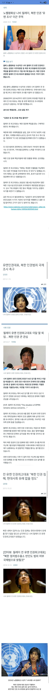

북한 인권에 강력히 문제제기한 올해 노벨평화상 수상자
댓글
북한 싫어하는 수상자를 미국과 이스라엘이 혐오하는 세상이 오다니 거참...
행적을 보니 정적이 많을 것 같은 사람임
존나 충격적인 얘기해줄까? 우리나라 모 단체에는
북한 여성인권을 찾는 단체가 있다.
놀랍게도 강사의 형태로 고용되어 강의함
북한 여성 인권 개선을 위해 영혼 보내기라도 하자는건가
대안도 없는 강의네
어쩔 수 없으니 남한 여성인권이라도 올리자면서 일단 돈부터내라고할듯 어디쓰는지는 묻지말고
북한사람들 불쌍하게 사는 거 뻔히 알텐데도
그 와중에 여자 인권만 보호하자는 편협한 생각이 그들의 방식인가?
답답하면 니들도 남성단체만드세요 하는애들인데 뭐ㅋㅋㅋㅋ
편 갈라 득표해서 정치권에 한 자리 꿰차 떵떵거리겠다는 일념으로 살아가는
대한민국에 하등 도움 안되는 쓰레기 같은 시민단체들

인권충은 좀 그렇긴 해
나 김정은이랑 잘지낸다면서 북한 인권보다는 핵위협 억제한다고 떠들어대는 노머고새끼랑은 상극이네